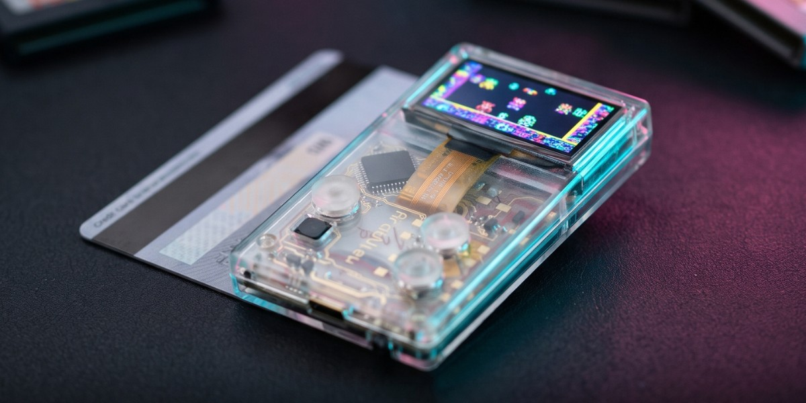

Geekotidien · Édition du 17 novembre 2026
Console transparente Arduview
Une console de poche entièrement transparente, financée sur Kickstarter

La console Arduview est présentée comme la première console portable 100 % transparente, de la taille d'une carte bleue. Son écran de 1,51 pouce est lui aussi transparent.
Créée par Louis Huang, étudiant au Babson College, elle est lancée par la plateforme Arduboy. Elle embarque 300 jeux, pèse 50 g et utilise un port USB-C et une batterie de 130 mAh.
Le prix annoncé est de 1 159 HK$ (environ 132 €) en vente, et de 692 HK$ (environ 79 €) en précommande sur Kickstarter. Le projet est présenté comme la version transparente de la FX-C, une console déjà commercialisée par Arduboy, et il est open source.
Le + : L'article ne donne pas de date de livraison fiable : il annonce une sortie en février 2025 alors qu'il est daté de novembre 2026.